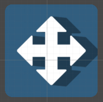
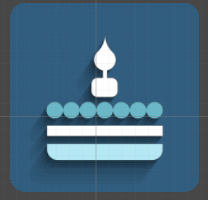
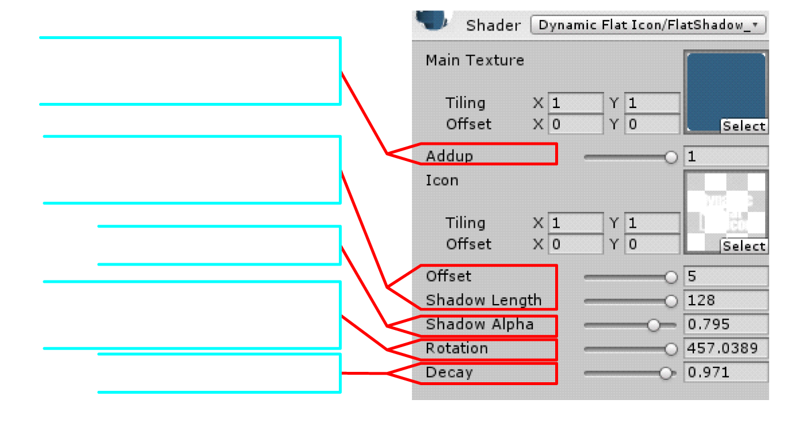
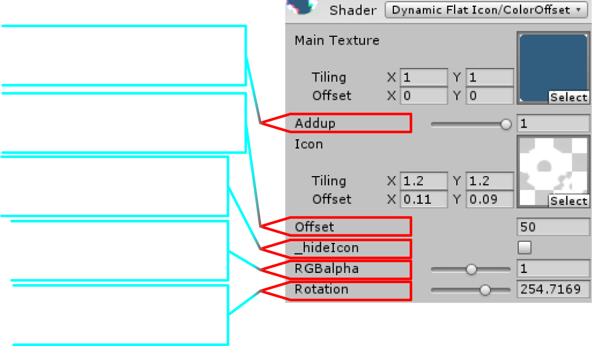
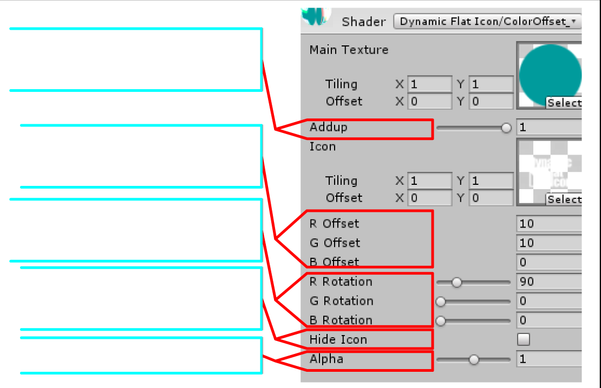
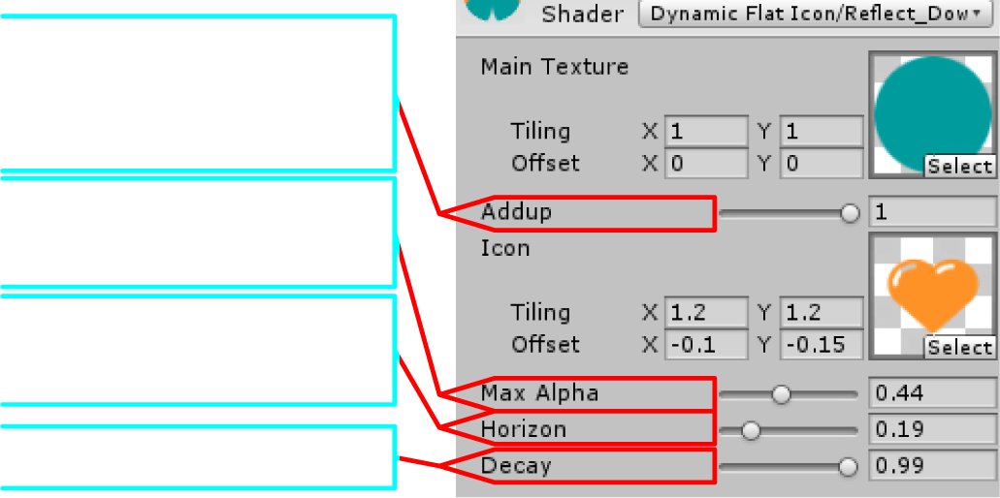
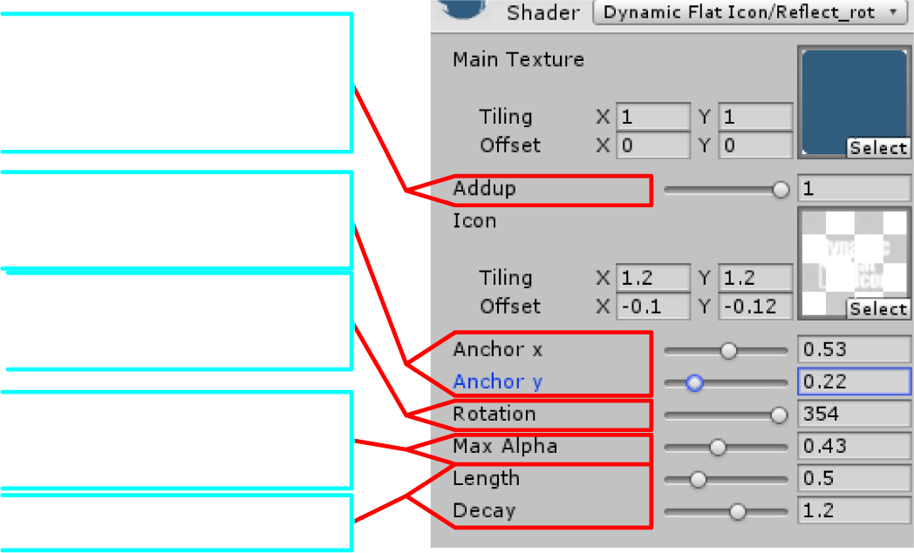
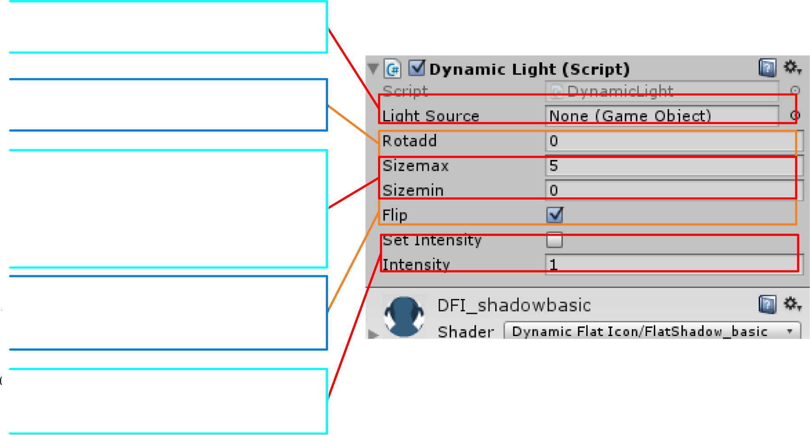
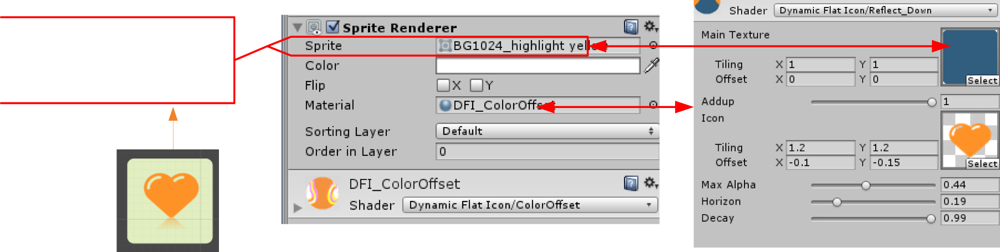
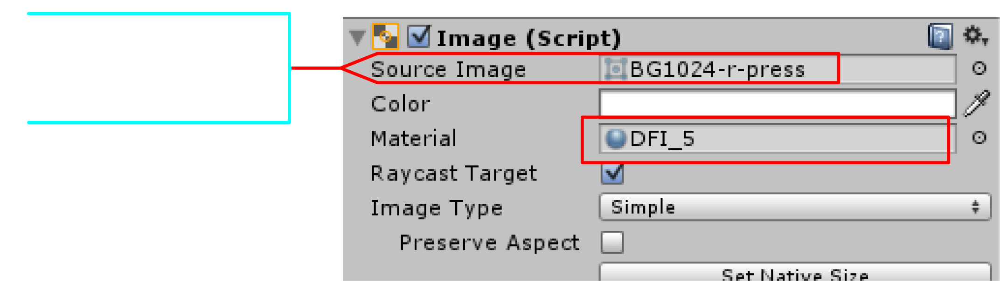

Dynamic materials of flat icon, for NGUI and 3D gameobject.
Features:
◆Flat icon with shadow:
Make flat style Icon and a dynamic shadow with only two texture.◆Color offset:
An easy way to make the icon shaking.◆Dynamic reflection:
Draw a reflection from any angle.Flat icon with shadow:
| DFI_Shadow_basic | DFI_Shadow_decay | DFI_Shadow_128 |
|  |  | |
| Fast and simple Easy to use. Draw a solid dark shadow |
Fast and simple An upgrade if the basic one. Draw a shadow fade out |
Smooth The shadow is more smooth then the simple two |

Color offset:
| DFI_ColorOffset_basic |
DFI_ColorOffset |
| Set RGB color offset to three direction uniformly | Set RGB color offset separately |
|  |  |
Reflect:
| DFI_Reflect_Down |
DFI_Reflect_Rot |
| Easy to make a reflection | Reflection of any angle |
|  |  |
Usage:
Dynamic Rotation:
Add component DynamicLight to the gameobject.Run the game and the shadow will move with the position of light source object.

2D sprite:

3d object:
Drag the material to the gameobject , it is much easier than UI and 2D object.UI button:

UI Image:
